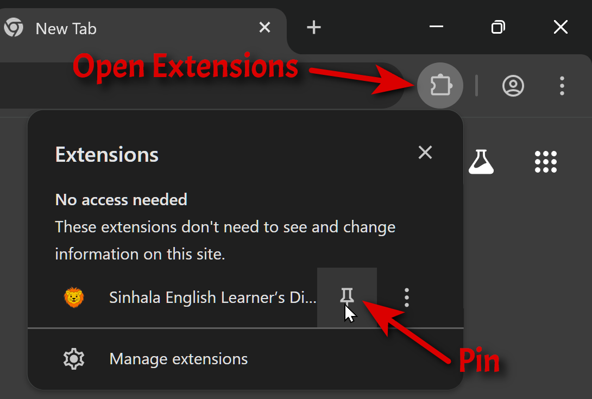
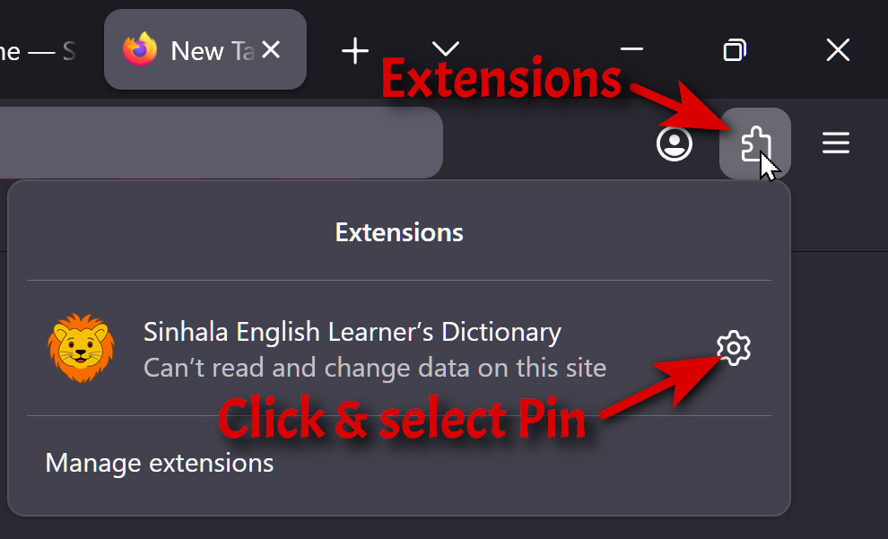

Sinhala English Learner’s Dictionary
You’re running the latest version!
©
View Changelog 📃
🚀
Getting Started
📌 Pin to your toolbar (optional)
Click on the extension icon in your toolbar. Select “Pin to toolbar.”
See browser specific instructions.
Open the Sidebar
Click the SELD icon in your browser toolbar to toggle the dictionary sidebar on any webpage.
Search for a Word
Type a Sinhala headword into the search box. Results appear instantly as you type.
View Definitions
Select a word from the results list to see its full definition, examples, and grammatical information.
⚡
Quick Lookup
Ctrl + Click any Sinhala word
Hold
Ctrl
(or
⌘ Cmd
on Mac) and click any Sinhala word on a webpage to look it up instantly in the sidebar.
Tip:
You can enable or disable
Ctrl
+Click lookup from the Settings panel inside the sidebar.
🔮
Features
Text-to-Speech — hear the pronunciation of any headword
Copy Definitions — copy formatted definitions to your clipboard
Dark Mode — automatically matches your system theme, or set manually
Adjustable Font Size — scale text up or down to your preference
Transliteration — view romanized versions of Sinhala text
Report Errors — suggest missing words or report incorrect definitions
⚙️
Customise
Open Settings
Click the Settings button in the top-right corner of the sidebar to adjust theme, font size, transliteration, and quick-lookup behaviour.
Note:
Settings are synced across all your open tabs automatically.
Browser specific instructions
Chrome
Click on the Extensions icon in your toolbar. Then select "Pin"

FireFox
Click on the Extensions icon in your toolbar.
Click the gear icon next to the extension.
Then select “Pin to toolbar.”

Browser icons from Freepik